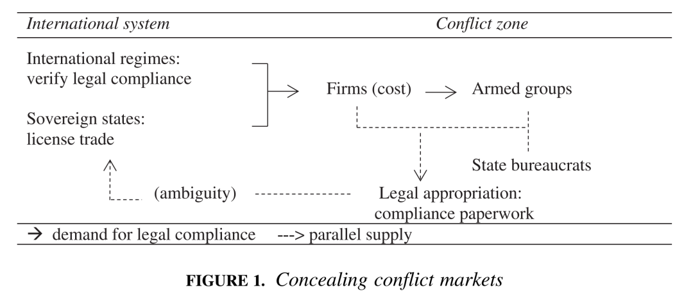
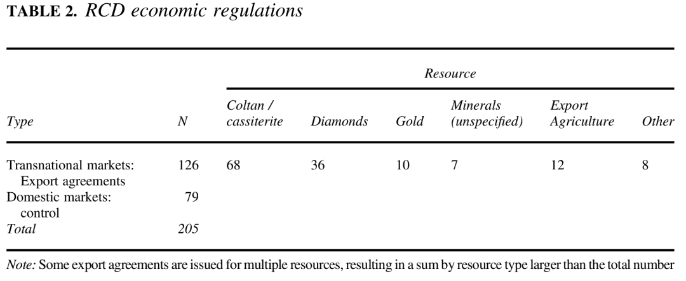
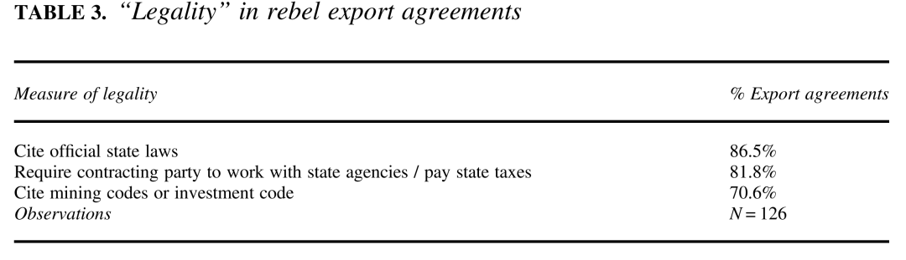
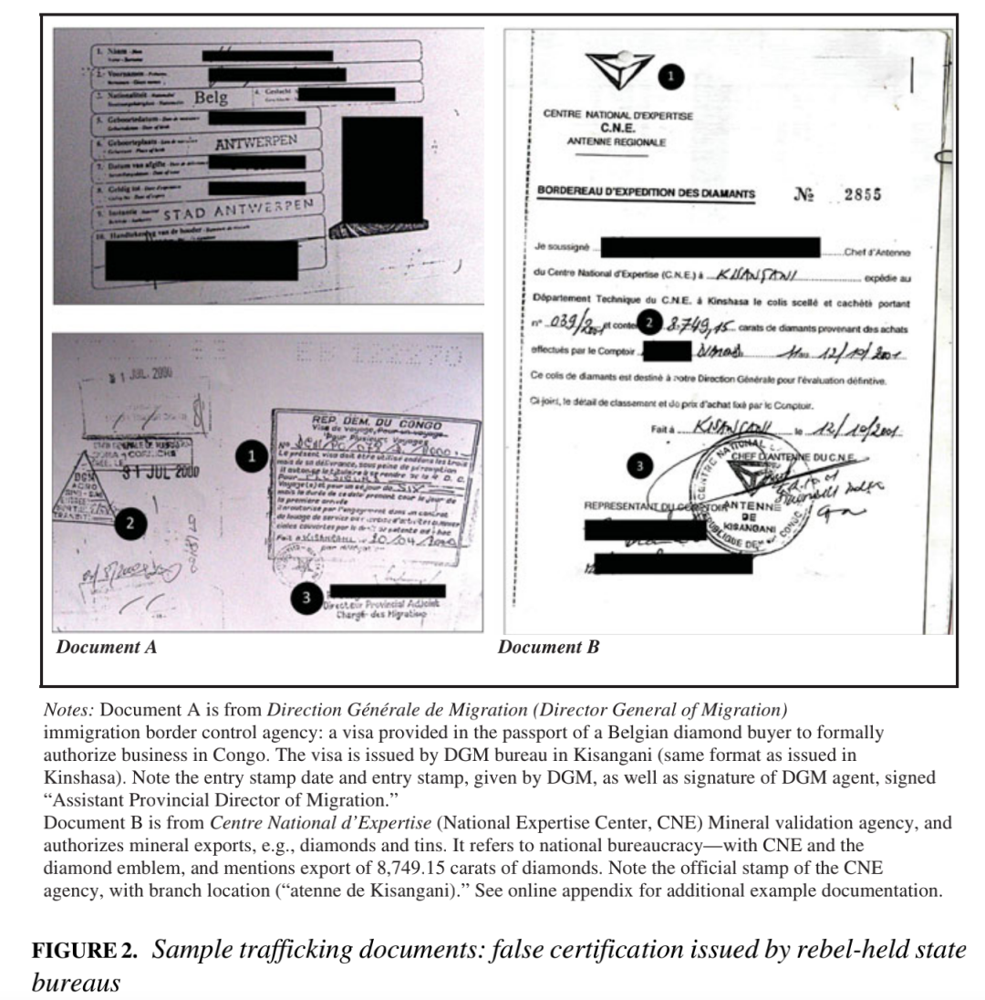

收录于合集 #《国际关系前沿》2021年第12期 22个

作品简介
作者： Rachel Sweet，圣母大学助理教授，研究领域为武装冲突，脆弱环境下的治理和国家能力，以及内战和暴动的研究方法和数据。
编译： 朱文菡（国政学人编译员，外交学院博士生）
来源： Sweet, R. (2021). Concealing Conflict Markets: How Rebels and Firms Use State Institutions to Launder Wartime Trade. I nternational Organization , 75(4), 1109-1132.
doi: 10.1017/s0020818321000205
归档： 《国际关系前沿》2021年第12期，总第39期。
内容摘要
学界日益关注内战的国际层面。战时贸易，伴随着全球买家与跨国网络，成为研究叛军与国际体系联系的核心关注。现有研究将战时贸易视为躲避国家当局的地下网络，然而这不能解释非法主体是如何将资源转移到正式市场的。本文以刚果（金）（又叫做刚果民主共和国）为例，使用由原始交易记录组成的新证据，指出叛军通过渗透国家机构，利用官方印章来为其非法交易贴上合法标签。本文的三项主要证据包括：交易双方叛军与跨境贸易公司间的126份合同，公司通过国家机构付款给叛军的支付记录，以及公司要求叛军对交易进行法律掩饰的声明。本文的解释框架和证据，通过重新定义叛军与正式法律、机构和市场的关系，为内战研究做出贡献。
文章导读
01
国际体系与战时市场
人们通常认为，叛军是通过地下网络融入全球市场的。然而，一个被忽视的关键问题是：如果他们进入正式市场的能力有限，资源丰富的叛军是如何将商品转化为发动战争的工具的？对资源的物理控制，不等于将其转化为收入来源的能力。因此他们必须找到一种游走于非法与合法之间的方法，即战时贸易模糊了非正式与正式规范和市场的边界。
战时贸易尚未得到充分研究，但有理由认为它是冲突经济的核心。首先，既有研究表明，叛军与国际体系联系的能力与他们在非国家和类国家地位间切换的能力有关，但这一洞见并未应用到全球贸易研究中。其次，研究非法市场的学者指出，公司可以利用错综复杂的离岸金融网络、专业中介机构和匿名空壳公司洗钱，但少有学者将战时贸易纳入研究。最后，日益严厉的制裁提高了在受冲突影响的市场中获得合法地位的要求。联合国制裁委员会将武装团体定为“非法”团体，并通过冻结银行账户和扣押资产来惩罚其贸易伙伴。在金融方面很少有人知道叛军如何应对这种新的制度环境。现有研究忽视了一些关键问题：作为国际体系基本原则的对国家的法律承认如何影响叛军交易的策略和制度？主权规范是否能够缓和叛军行为，或改变其为暴力提供资金的方式？制裁是激励公司遵守规定，还是寻求变通？这需要我们更深入地了解战时贸易可以利用的备选工具。
02
擦边球：内战中的法律挪用
在有司法主权但充满冲突的国家的国际贸易中，叛军可以利用国家机构来制造合法性（legality）。作者将这种做法称为“法律挪用”（“legal appropriation”）。这样既满足了国际社会对法律合规（legal compliance）的要求，也推动了叛军的国家正当化（legitimation）进程（见下图）。这种平行认证反过来又制造了法律实践中的模糊性，进而导致执行困难。

在有司法主权但充满冲突的国家的国际贸易中，叛军可以利用国家机构来制造合法性（legality）。作者将这种做法称为“法律挪用”（“legal appropriation”）。这样既满足了国际社会对法律合规（legal compliance）的要求，也推动了叛军的国家正当化（legitimation）进程（见下图）。这种平行认证反过来又制造了法律实践中的模糊性，进而导致执行困难。
03
数据与研究设计
本文以第二次刚果战争为例，研究公司与叛军间的互动。之所以选择这场战争，原因有三。一是这场战争被学界视为资源战争的典型案例；二是对这场战争的现有研究忽视了国家机构的参与；三是这场战争将冲突经济纳入国际议程。
研究数据来自于叛军的内部记录。在战后田野调查期间，作者通过谈判获得了包括刚果民主联盟（RCD，以下简称民盟）在内的叛军档案。这些档案包括财务报表、合同、采矿许可证、支付单和外国买家的身份证明文件，以及出口证明、表格和给交易披上合法外衣的官方印章。作者还通过内部有效性检查和外部有效性检查，评估数据信度。
作者通过法律挪用和机制来考察战时贸易。
04
法律挪用：一套系统性方案
当民盟组织起来并获得领土时，它接管了国家在当地的分支机构，包括税务、海关和矿物认证局。这些机构的正式任务是核实钻石和黄金等商品的贸易是否符合国家立法。民盟接管后，重组了机构的指挥系统，以便向位于戈马的叛军总部汇报和汇款。民盟保留了基层公务员，并设立新机构进行监督。在位于首都金沙萨的中央政府影响力逐渐减弱的时候，公务员们仍然维持着机构原本的样子——部分原因是他们要利用自己的职位作为权力和腐败的来源。而叛军则通过接管这些机构，控制了国家（statehood）地位的杠杆。
4.1. 合法外衣：出口协议
为了系统地衡量国家机构如何为叛军的交易提供掩护，作者首先审查民盟及其贸易伙伴之间的出口协议。如果当局提供了使交易合法化的渠道，就会反映在这些协议中。这些书面协议或合同需满足两个要件：（1）它们授权与叛军进行经济交易；（2）它们是为特定的贸易伙伴量身定做的。由此获得如下图所示的126份出口协议。交易集中于利润丰厚的钶钽铁矿石和锡石（n=68），其次是钻石（n=36），此外还有黄金、一般采矿以及木材和咖啡。民盟的财政部或土矿能源部发布了大多数协议。

为了考察叛军在跨境贸易中使用合法外衣（legal veneers）的普遍程度，作者研究了出口协议中涉及国家合法性的三个指标：对国内法的依循、对公司通过国家机构转交付款或货物的要求，以及对《采矿条例》或《投资条例》的依循。中央政府合同作为比较的基准。

上图列出了考察结果。126份协议中，86.5%依循了国内法。其中许多在措辞的开头都提到了国内法，如“依照1967年9月23日颁布的关于采矿的第67-416号法令，[公司]同意[对y数量的z资源的x价格]”。协议还要求公司遵守国内法，一个格式条款是“[公司]被指定为[资源]买方，符合刚果民主共和国现行立法”。此外，82%的协议要求公司通过国家机构支付或取得官方许可证。
标准化的官僚格式提供了一种无事发生的表象，掩盖了交易的非法性质。这些协议要求公司像叛乱前一样通过同样的机构交易，为其披上一层合法外衣。
4.2. 量身定做的策略？
这种合法外衣是为国际市场量身定做的吗？作者研究发现，为国际市场交易披上合法外衣的比例远远高于国内市场。由于协议和条例格式相同，作者将国内消费市场的汽油、香烟和家庭用品作为对照组。详细数据在本文线上附录中展示。结果表明，民盟对外部市场的监管合法性水平（3.98）高于国内市场（-0.72），T检验呈现显著性（4.70, T = 10.7, p < 0.001），证明了这一假设。
4.3. 公司：获得法律掩饰
为了考察公司是否通过国家机构作为中介将收入转移给叛军，作者将这些出口协议与公司的付款记录进行了交叉比对。其中包括税单、收据、官方许可证、出口证明和书面信函。在此，作者使用不同的数据源来交叉验证合法外衣与实际使用的国家机构。
下图展示了这些付款记录的样例。技术上来说，这些文件是伪造的，但它们有官方信笺和印章提供法律掩饰。它们要求公司付款给叛军控制的账户，但没有提及叛军。

作者发现，77%的公司通过国家渠道向叛军付款。此外，公司还与叛军要求以外的国家机构合作。协议要求公司向平均1个机构报税，但实际支付记录显示，公司与平均3.4个机构互动。这一发现说明公司可能有利用合法渠道的独立动机。
05
机制：成本与模糊性
以上考察揭示了三点。第一，民盟广泛利用国家法规和程序来使交易生效。第二，叛军为国际市场量身定做了这层合法外衣。第三，国家机构在叛军与其贸易伙伴间传递资金和资源。本节将探讨这一策略的基本机制。
5.1. 法律效力的要求
对法律效力的全球规范为叛军带去了经济成本。民盟记录显示，公司规避了那些很容易与叛军联想到一起的交易，即公司通过其购买行为本身将经济成本转移给叛军。当第二次刚果战争爆发初期，叛军试图直接将资源卖给买家。但民盟矿业部门发现，公司更愿意从位于邻国卢旺达和乌干达的幌子公司购买，并拒绝向叛军交税。因此，民盟预计从钻石销售获得120万美元最终只收到23万美元，损失近100万美元。可见，法律上的不利地位是要付出经济代价的。此外，公司还建议民盟改善其国际形象。
民盟从2000年中期开始实施全面的法律挪用策略。由于对公司的制裁会转移到叛军身上，叛军需要维持当地国家机构最低限度的运转。没有合法外衣的交易会直接被联合国调查员贴上“血钽（blood tantalum）”标签，使合作商与其划清界限。无法出售资源的叛军这才恢复了官僚机构。叛军的经济利益与公司在全球市场的法律掩饰是交织在一起的。
5.2. 平行正当化的累积
在全球市场，法律挪用是否使人信服？中央政府和国际监管机构如何应对？贸易协议表明，这些掩饰起到了作用，在谁行使国家权力方面制造了模糊性。
刚果（金）中央政府是依赖外部承认来维持财政和军事生存的弱国典型。金沙萨在整个内战期间利用承认授权进行矿产开采，通过给予幌子公司“主权正当性”之名来出让其法律地位。对叛军占领区国家机构为叛军服务睁一只眼闭一只眼。然而，上述贸易协议表明，这种做法在国家正当化问题上引发了新的竞争。
举例来说，刚果（金）在民盟占领区招募了一家外国公司作为半国营公司开采锡矿，企图利用法律垄断地位排除竞争对手的贸易利益。民盟在此地招募了另一家德国公司c接管这家半国营公司。民盟向其颁发了许可证、出口证明并约定符合国内法的经营和付款方式。c公司声明“经刚果国家批准”接管公司。金沙萨向国际刑警组织和国际法院提出抗议，但这一案件在一场持续时间超过战争的法律战中被搁置。而此时，叛军已经阻止了金沙萨贸易伙伴的行动。
在国际层面，联合国小组、非政府组织和国家法院负责调查战时贸易，判断贸易是否符合“现有监管框架”，以惩罚“侵犯刚果（金）主权”的主体。但通过官方机构进行的非法交易改变了这些规则的效力。公司援引官方法规进行辩护。比如，金沙萨请求国际刑警组织征用德国公司c的锡矿时，c公司表示具备所有采矿文件。
利用官方规则造成了法律实践的模糊性。在这种情况下，法律适用给监管者造成困难。比如，联合国专家小组通过确定公司是否向国家机构付款来核实其守法情况，但支付记录显示，“表格由政府机构签发，并附有所需印章和签名。”专家小组将民盟的贸易伙伴列入黑名单，却因无法证明其行为非法而撤销了制裁建议。c公司也从未在德国法院受到指控。通过法律规则，公司和叛军利用法律挪用来扩大合法范围，或至少提供合理的推诿。
06
影响
6.1. 国际体系、主权与国家制度
这些发现表明，主权、制度和暴力之间存在着更为复杂的关系。冲突地区的跨境市场与对国家的法律承认间建立了新的联系。它打破了国家制度中中央政府的司法垄断，说明军事控制可能与获取合法地位的能力关系更紧密。叛军的市场合法性，以及公司对叛军以国家名义进行交易的承认，削弱了中央政府利用法律垄断作为权力来源的能力。中央政府虽然在国际范围内得到承认，但其对如何使用这种地位做不到垄断。
被中央政府放弃的地方税务和海关部门为处于法律劣势的主体提供了宝贵的合法资源。只要现有规范重视正当性，国际体制认可带有官方印记的经济交易，叛军就有利用这些国家机构的动机，也由此分散了对国家机器的控制。
这些新发现促使人们对国家正当化的平行应用进行研究。比如，政府的哪些层面在国际舞台使用其法律地位；中央政府如何调整经济战略以应对其国家地位的平行应用；公务员们的动机与国家机构可能存在哪些不同，他们在战争期间的求生策略如何构建非国家行为体的力量。
6.2. 叛乱治理研究与战时秩序
叛军需要与国际环境联系的正式渠道。他们不仅需要模仿高层，还需要借助基层公务员提供的支持网络。在战争期间，叛军与公务员们的联系可能会对其融资产生持续影响。未来研究将关注其经济网络和冲突后遗产。
这些发现也为战时税收秩序的建立提供了新途径。学者们通常将外部伙伴和丰富资源视作叛军不愿建立机构的动力因素，然而公司却寻求通过官方机构合作。这就提出了官方机构在战时贸易中发挥其他作用的问题：除了作为合法外衣外，机构是否还提供诸如可预测市场等保障？比起一次性交易，既有的规则制度为公司提供了更多可预测性？学者们只关注了对平民征税建立的战时秩序，但从稳定制度中获取外部关系可能提供了另一重秩序。
6.3. 非法市场与制裁制度：方法和基本假设
这些发现需要我们更深入地了解非法资金通过正规机构流动的各种方式。洗钱组织和有组织犯罪利用了规则空白。遏制战时融资的政策努力没有跟上。现有制度设想，对资助叛军的重罚会鼓励公司使用合法的国家渠道。这些政策规定，只要遵循官方程序，交易就是合法的。从定义上，与叛军交易是违法的，但在实践中这些界限是模糊的。
政策制定者必须将重点从适用何种制度转向更深入理解渗透和管理这些制度的关系。如果非法经济披上合法外衣为叛军服务，其规模可能远超我们所意识到的。其次，政策必须调整人们对叛军在全球环境中如何生存的预期。当涉及国家和国际体系时，叛军更擅长操纵政策制定者和学者们的预期。在研究方法上，这要求我们更关注那些影响我们对战争理解的证据和假设，以及这些证据和假设如何可能构成叛军竞争领域的一部分。
译者评述
本文打破了非法主体对国家机构避之不及的既有印象，以第二次刚果战争为例，指出处在战争与动荡中的脆弱国家，中央政府难以实现对各地方的有效控制，叛军在其军事占领区能够利用当地国家机构为其非法贸易提供法律掩饰。作者将这一现象命名为“法律挪用”，并在进一步探究其机制时发现：外国公司为避免国际制裁，引导叛军通过“法律挪用”为非法贸易披上合法外衣，导致在法律实践中叛军对刚果（金）中央政府主权地位的冲击。
刚果（金）不是个例。在中东、拉美和非洲的脆弱国家，或多或少都面临着同样的问题。一方面，这些国家往往拥有丰富的资源，吸引着全球买家；另一方面，中央政府无法实现全境内有效的军事控制和社会治理，导致主权的排他性只存在于纸面上。我国在“一带一路”建设中合作的部分发展中国家也是如此，这些国家治国理政的难题也带来中国企业“走出去”的风险。11月19日，习近平主席在第三次“一带一路”建设座谈会上指出，“要正确认识和把握共建‘一带一路’面临的新形势”，“全面强化风险防控”，“提升规则标准等‘软联通’水平”[1]。脆弱国家的主权困境与国际规则的执行困境，都是中国企业“走出去”可能面临的风险。在项目竞争中，如何应对可能出现的“法律挪用”挑战？在规则更新中，如何实现更有效的国际监管和利益保护？等等，都是值得我们进一步探究的问题。
参考文献
[1] 习近平出席第三次“一带一路”建设座谈会并发表重要讲话_中国政府网. (2021). Retrieved 13 December 2021, from http://www.gov.cn/xinwen/2021-11/19/content_5652067.htm
词汇整理
非法市场 **Illicit market
**
正式市场 Formal market
制裁 Sanctions
渗透 Infiltrate
合法性，合法律性 Legality
正当性 Legitimacy
正当化 Legitimation
执行 Enforcement
审校 | 唐一鸣 丁伟航
排版 | 陆霜滢 陈炜昊
文章观点不代表本平台观点，本平台评译分享的文章均出于专业学习之用, 不以任何盈利为目的，内容主要呈现对原文的介绍，原文内容请通过各高校购买的数据库自行下载。

国政学人
支持学术公益与知识传播
微信扫一扫赞赏作者 __赞赏
已喜欢，对作者说句悄悄话
取消 __
发送给作者
发送
最多40字，当前共字
上一页 1/3 下一页
长按二维码向我转账
支持学术公益与知识传播
受苹果公司新规定影响，微信 iOS 版的赞赏功能被关闭，可通过二维码转账支持公众号。